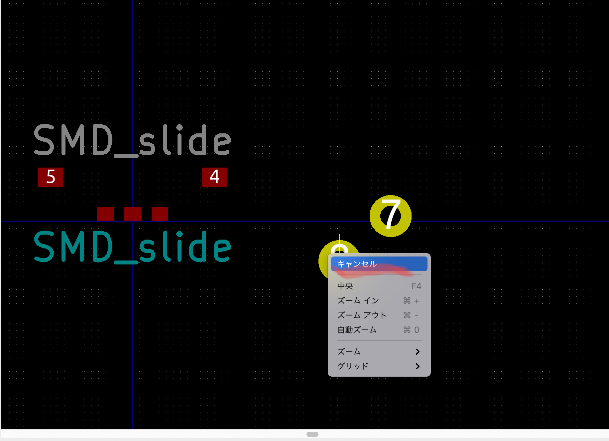

Hello!

・写真のようなもの。
・基盤をデザインするために必要なオブジェクト。
・配線をために作る。
・フットプリントを作成したい部品の設計図を用意します。
・このデータは大体商品のデータシートにあります。
・kicadの中の赤丸のエディタを開く。
・左上のファイルから新規ライブラリを選択。
・適当に文字を入れる。
・グローバルだと管理が大変らしいので、プロジェクトを選択。
・そしたら、先ほど入れた名前を赤線のところで検索。
・右クリックして新規フットプリントを選択。
・適当に名前をつける。
・今回はこれを作る。
・赤丸のところがパッドを作るファンクションなので選択。
・デカくて丸くて黄色いのになるが問題ない。
・適当な位置に配置。

・一旦右クリックしてキャンセルを選択。
・そしたら配置したオブジェの上で右クリックでプロパティを選択。
・本日使う設計図を確認。
・xの長さが0.6、yの長さが0.5である。
・赤線部分を編集。
・パッドの番号は被らないように1からつけていく。
・サイズX、サイズYのところに先程の長さを入れる。
・OKを選択。
・そしたら形が変わる。
・三つのパッドの間は1mm。
・なので上のサイズ変更のところから1mm間隔にサイズを変える。
・先程のパッドの上で右クリックして複製を選択。
・1mm間隔で配置する。
・先程のようにプロパティから番号を変更する。
・この写真を参考に作成・配置する。
・X:0.9mm、Y:0.7mmのパッドを作成する。
・三つの部品の1.1mm上で中心から3mm離れたところに配置する。
・完成
・赤丸部分を選択。
・適当な位置に文字を入力。
・今回はフットプリントを作成しました。
・まだまだ何をしているかわからないと思いますが、後々重要になってきます。
・今後、少しずつアップをしていきますが、早く勉強したいという方は、こちら
の動画で勉強してみてください。
Fin.